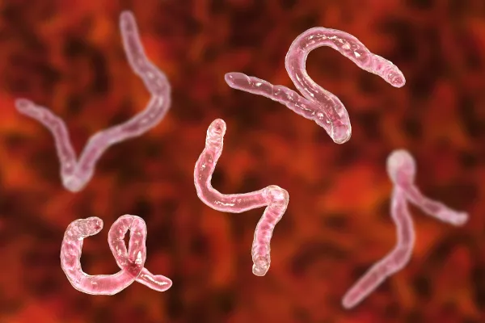

Informações Gerais
Ancilostomose
A ancilostomose é uma infecção parasitária causada por vermes do gênero *Ancylostoma* ou *Necator*. Estes parasitas, conhecidos como ancilostomídeos, habitam o trato gastrointestinal do hospedeiro humano. A infecção ocorre quando larvas penetrantes, presentes em solo contaminado, entram na pele e se deslocam até o intestino delgado, onde se desenvolvem em vermes adultos. A ancilostomose é uma doença que pode causar anemia e outras complicações devido à perda de sangue e nutrientes.
